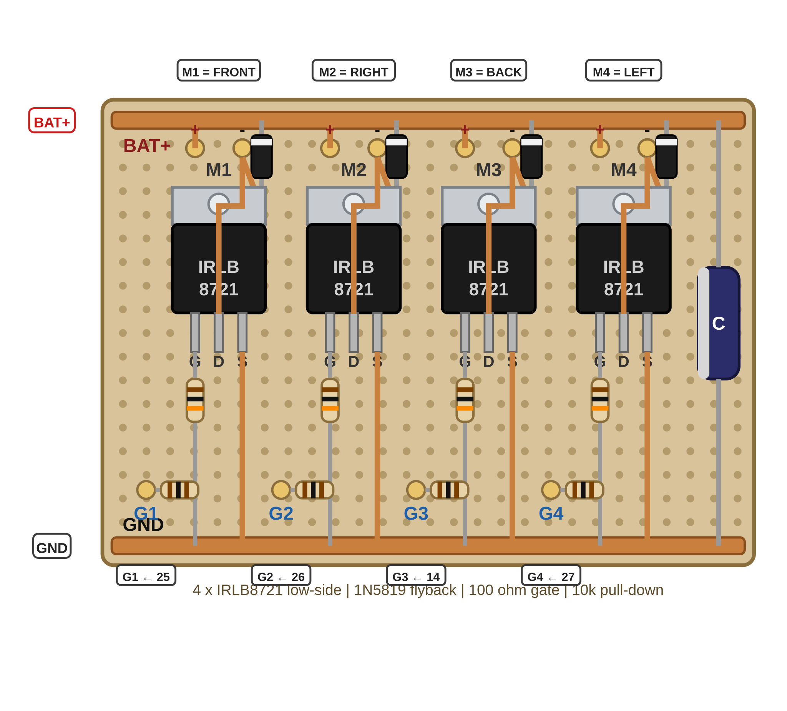

מכירים את לוח ה-MOSFET ובודקים אותו
מזהים כל פד על הלוח המולחם ובודקים אותו במולטימטר לפני שהוא מקבל חשמל.
לוח ה-MOSFET שלכם מגיע מולחם מראש. בשלב הזה לא מחברים אליו סוללה ולא מנוע — רק מזהים ובודקים.
לוח ה-MOSFET מקרוב


מה עושים
מחזיקים ביד IRLB8721 רזרבי כשהכיתוב פונה אליכם והרגליים כלפי מטה ואומרים בקול: Gate – Drain – Source, משמאל לימין.
נוגעים בלשונית המתכת — הלשונית היא ה-Drain. ארבע הלשוניות על הלוח לעולם לא נוגעות זו בזו — נגיעה מחברת את ארבעת המנועים למנוע אחד.
מוצאים על הלוח ומצביעים על כל אחד מאלה:
אותה תמונה נמצאת גם בכרטיס R2.
מכוונים את המולטימטר למצב רציפות — זה שמצפצף, על החוגה כתוב Continuity — ועושים שתי בדיקות:
צפצוף באחת מהבדיקות = קצר. עוצרים, לא מחברים שום דבר ללוח וקוראים למורה.
מעבירים את המולטימטר למצב אוהם בטווח 20k ובודקים כל פד G מול פס GND: בערך 10kΩ.
זהו נגד ההורדה: כל עוד ה-ESP32 לא מפעיל את השער, הנגד מחזיק אותו על 0V.
באותו טווח בודקים כל פד M− מול פס GND: OL (התנגדות גבוהה מאוד).
המוספט כבוי כשהשער שלו על 0V — ולכן אין מעבר מפד M− אל GND.
כותבים על הכרטיס את ארבע התוצאות של G1 עד G4 מול GND.
מה המולטימטר צריך להראות
Continuity (beep) BAT+ <-> GND no beep tab <-> tab no beep Ohm, 20k range G1..G4 <-> GND ~10 kΩ M1-..M4- <-> GND OL
אין צפצוף באף אחת משתי בדיקות הרציפות. ארבעת פדי G מראים בערך 10kΩ מול GND וכל פד M− מראה OL.
הלוח עדיין לא מחובר לשום דבר — הבדיקה הזאת נעשית לפני שהוא מקבל חשמל.